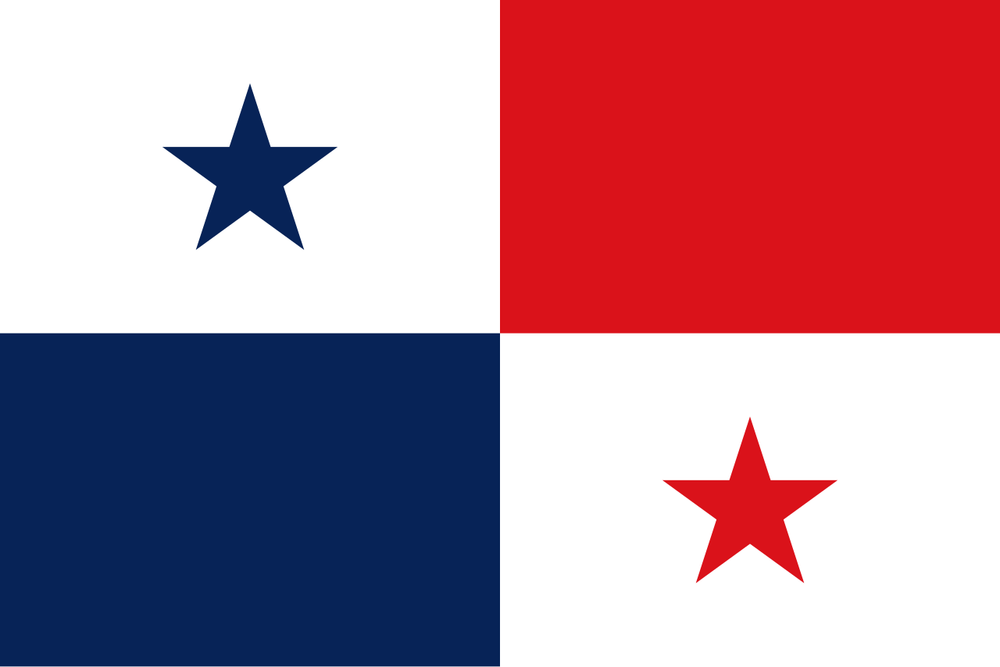

Símbolos patrios:
- Bandera: Dividida en cuatro partes de colores rojo, azul y blanco con dos estrellas.
- Escudo: Tiene símbolos de paz y prosperidad.
- Flor nacional: Flor del Espíritu Santo.
- Ave nacional: Águila harpía.
Historia:
Panamá se independizó de España en 1821,
y de Colombia en 1903 con apoyo de Estados Unidos, para construir el Canal de Panamá.
Extensión territorial:
Panama tiene una extensión territorial de 75,417 km2.
Departamentos:
Tiene 10 provincias, entre ellas Panamá, Colón, y Chiriquí.
Lugares turísticos:
- Canal de Panamá
- Archipiélago de San Blas
- Bocas del Toro
- Parque Nacional Coiba
- Casco Viejo de Ciudad de Panamá